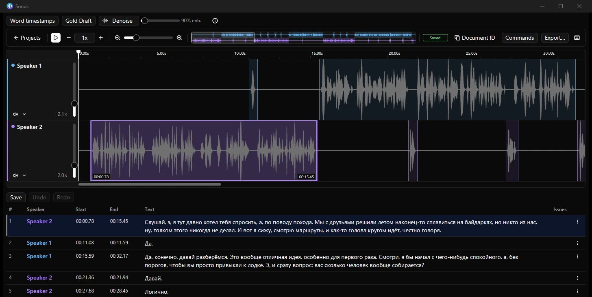

Слышать то, что правишь
Аудиоволны, сегменты на таймлайне, дорожки спикеров, скорость воспроизведения и отмена правок. Работайте с записью, а не только с текстом.

Аудио. Текст. Ваш ритм.
Сегментный редактор транскрипций с аудио. Текст, спикеры и тайминг — вместе. Инструменты — на ваш выбор.
Открытый код · MIT · Локальная работа без аккаунта

01 / Главное
Аудиоволны, сегменты на таймлайне, дорожки спикеров, скорость воспроизведения и отмена правок. Работайте с записью, а не только с текстом.
Стандартная сборка включает Local, форматы субтитров, базовые проверки и необязательные ИИ-инструменты и интеграции. Веса моделей скачиваются отдельно.
Ядро — редактор сегментов и аудио. Проверки, ИИ, форматы и рабочие процессы сервисов живут в расширениях, а не требуют обязательного аккаунта или ИИ.
02 / Начать работу
Скачайте установщик для Windows или распакуйте portable ZIP в папку с правом записи. Запустите Exaudio. Rust и сборка из исходников не нужны.
Нажмите «Открыть аудио»: каждый файл станет дорожкой. Начните с WAV, MP3 или FLAC. Можно открыть сохранённый проект. Babel и Relay — необязательные режимы со своими условиями доступа к сервису.
Уточняйте границы сегментов, назначайте спикеров и редактируйте текст на слух. Для помощи ИИ сначала настройте расширение, скачайте среду выполнения и модели и выполните проверку настройки. Для ручной работы это не нужно.
Сохраните проект в родном формате, чтобы продолжить позже. Расширение Formats экспортирует SRT, WebVTT и обычный текст. Экспорт субтитров не заменяет редактируемый проект и исходное аудио.
Клавиши воспроизведения и перехода по сегментам работают вне текстовых полей. Здесь указаны настройки Windows по умолчанию; полный список и переназначение — в диалоге горячих клавиш.
03 / Рабочие пространства
Ваше аудио, ваши файлы. Открывайте записи и проекты без входа на платформу заданий. Самый простой способ начать.
Необязательная собственная интеграция автора Exaudio с заданиями и рабочим процессом Babel. Нужен разрешённый доступ к сервису. Exaudio не является официальным продуктом Babel и не заявляет о поддержке со стороны Babel.
Необязательная интеграция для делегированного доступа к заданиям через настроенный relay. Доступ выдаёт ваш оператор; это не публичный анонимный сервис и не условие работы Local.
Режимы объявляют необходимые расширения. Пока режим используется, его зависимости должны оставаться включёнными; перед удалением переключите или закройте связанное рабочее пространство.
04 / Расширения
Добавляйте команды, панели, диагностику, форматы и режимы. Встроенные инструменты используют нативные Rust-расширения; Rust SDK позволяет создавать устанавливаемые WebAssembly-компоненты в песочнице.
Авторы хранят исходники и версии пакетов в собственных репозиториях GitHub. Общий индекс описывает выпуски, совместимость, хеши пакетов и запрашиваемые разрешения — но не делает любого автора доверенным.
Перед установкой проверьте автора, код и разрешения. Доступ WASM к документам, аудио, хранилищу и сетевым хостам выдаётся явно. Встроенные нативные расширения имеют права приложения и не изолированы песочницей ОС.
05 / ИИ и приватность
Выберите «Этот ПК» в ИИ-расширении, установите среду выполнения и модели нужных инструментов, затем выполните тест устройства. В Windows используются WebView2 и WebGPU: важны совместимая видеокарта и актуальные драйверы. Размер загрузок, требования к памяти и диску зависят от моделей.
Веса моделей не спрятаны в установщике. Для первой загрузки нужен интернет; у моделей собственные лицензии. Локальная обработка не делает функции внешних сервисов автономными.
Для локального редактирования не нужно загружать запись на сервер. При выборе удалённого ИИ аудио или текст могут передаваться провайдеру; Babel и Relay обращаются к настроенным сервисам. Перед работой с чувствительными записями проверьте разрешения расширений и условия провайдера.
На этом сайте нет аналитических скриптов, трекеров и внешних шрифтов. В браузере сохраняется только выбор языка. У GitHub Pages и сервисов по ссылкам свои инфраструктура и политика конфиденциальности.
06 / Загрузка
Windows x64 · Стабильный канал · Стандартная сборка с расширениями
Alpha — отдельный экспериментальный канал, не стабильная лента обновлений. Перед тестированием сохраните резервные копии проектов. Для macOS предусмотрены только ручные альфа-пакеты; стабильных загрузок macOS и Linux здесь нет.
Установщик Windows alpha ↗07 / FAQ
Для Local и ручного редактирования — нет. Исходный код Exaudio распространяется по MIT. Необязательные интеграции требуют собственного доступа к сервисам; внешние ИИ-провайдеры могут брать отдельную плату.
Нет. Редактор работает и без ИИ. Для автоматической расшифровки нужны включённое ИИ-расширение и настроенный бэкенд; для локальной обработки — отдельно скачанные модели и совместимое оборудование. Сверяйте результат с записью.
Локальное редактирование и сохранение не требуют аккаунта сервиса или загрузки записи на сервер. Скачивание приложения, обновления, установка расширений и первая настройка ИИ требуют сети. Удалённый ИИ, Babel и Relay зависят от своих сервисов.
Нет. Сохраняйте родной проект вместе с исходным аудио. SRT, WebVTT и текст — форматы передачи результата; они не сохраняют все детали редактирования и оригинальную запись.
Создайте issue на GitHub: укажите версию Exaudio и Windows, режим и расширения, шаги воспроизведения и текст ошибки. Не прикладывайте ключи, приватные задания или личные записи — используйте синтетический пример. Приветствуются код, расширения, переводы и понятные сообщения об ошибках.
Обратная связь и ошибки ↗